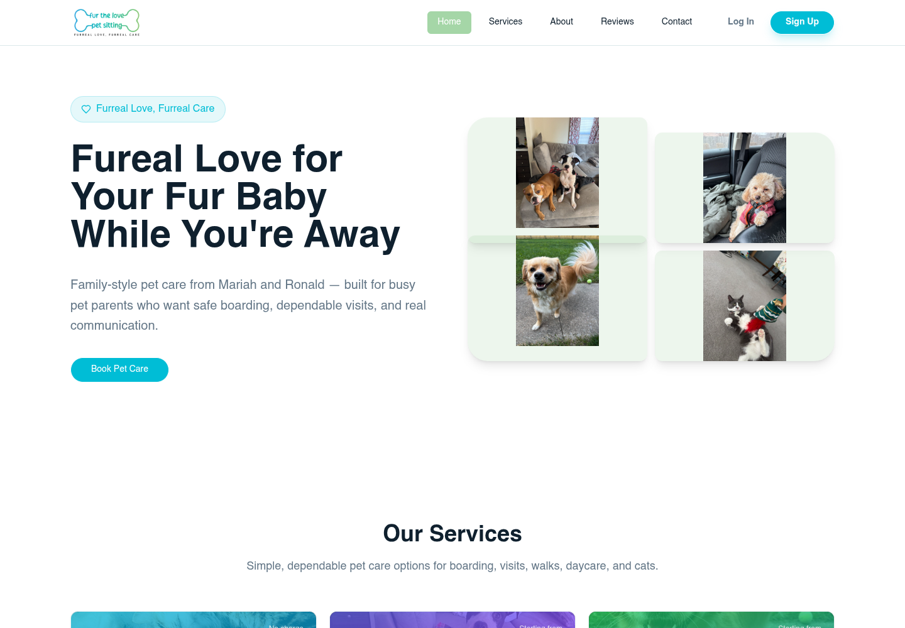
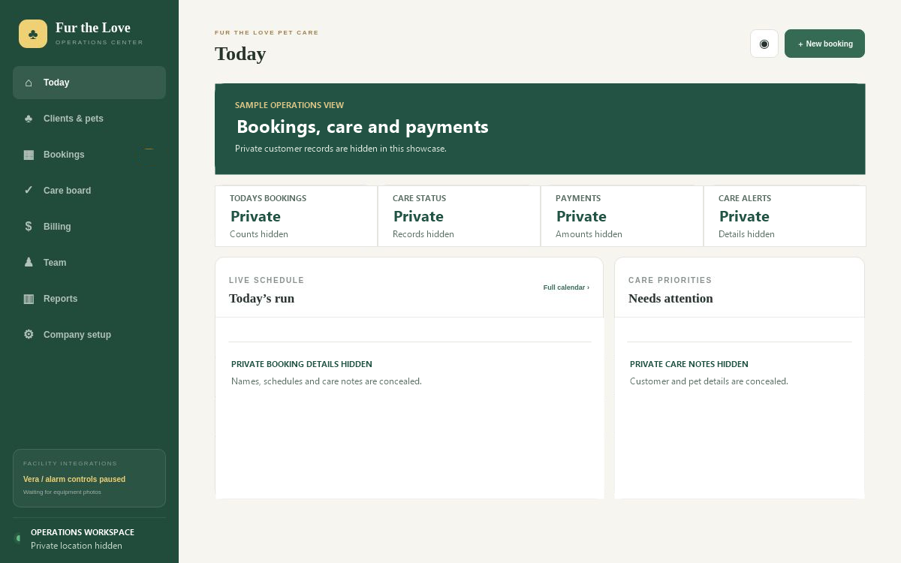
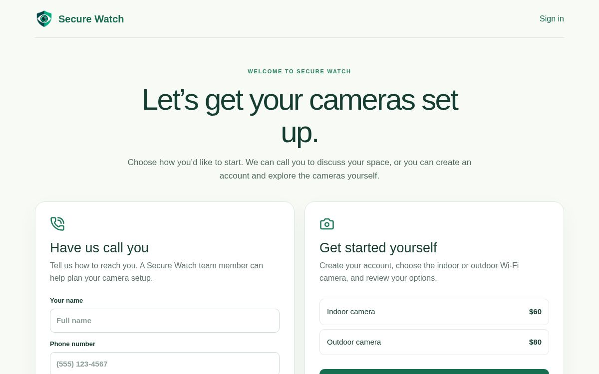

01
Computer & laptop repair
Diagnostics, slow computers, Windows resets, SSD/RAM upgrades, batteries, keyboards and screen replacement.
PC · MAC · SSD · RAM · DISPLAYRequest this serviceComputer and phone repair, small-business IT, websites and software—plus mechanic, plumbing and handyman work. Tell Ronald what needs working, and find the right place to start.
Choose what needs help
Bring the problem. Ronald can help with the technology you use, common repairs on your vehicle, plumbing repairs, and practical work around your home or property.
Diagnostics, slow computers, Windows resets, SSD/RAM upgrades, batteries, keyboards and screen replacement.
PC · MAC · SSD · RAM · DISPLAYRequest this serviceScreen and common hardware replacement, device setup, data transfer and troubleshooting.
IPHONE · IPAD · DEVICE SETUPRequest this serviceWi-Fi, workstations, printers, email, remote support, backups and practical technology management.
NETWORKS · DEVICES · SUPPORTRequest this serviceModern websites, booking flows, customer portals, payments, dashboards and business automations.
WEB · PAYMENTS · AUTOMATIONRequest this servicePurpose-built apps and internal tools that remove repetitive work and connect the parts of your operation.
APPS · AI · DATABASESRequest this serviceCameras, sensors, local servers, remote access and custom monitoring concepts for homes and businesses.
CAMERAS · IOT · SERVERSRequest this serviceRouter and access point setup, coverage planning, connection problems and getting your devices talking to each other.
WI-FI · ROUTERS · ACCESS POINTSRequest this serviceBrake jobs, axle replacement, catalytic converters, alternators, thermostats, lower ball joints and related common repairs.
BRAKES · AXLES · EXHAUST · CHARGINGRequest mechanic workSimple electrical work, painting, landscaping and general repairs around your home or property.
ELECTRICAL · PAINT · YARD · HOMERequest handyman workEveryday plumbing repairs for sinks, faucets, drains, toilets and fixtures. Share what is leaking, clogged or not working so the job can be scoped before a visit.
SINKS · FAUCETS · DRAINS · FIXTURESRequest plumbing serviceA real local pet-care business, the software behind its daily operations, and a connected-security product.

FUR THE LOVE / LIVE WEBSITEA welcoming home for the pet-care business: discover services, book care, manage pet profiles and handle payments.
Explore the website
OPERATIONS CENTER / PRIVATE DATA REDACTEDThe shop’s operations center connects website bookings and payments with boarding records, pet profiles and connected-device status.
Website bookings and payment status come together with manual boarding entries, dog profile photos and camera/device status in one staff workspace.
This is the real Operations Center screen with customer names, schedules, care notes and payment amounts redacted for privacy.

SECURE WATCH / CURRENT PRODUCT SCREENA connected-security platform bringing cameras, alerts, installation support and a central control experience together for homes and businesses.
The product brings the customer journey—from choosing protection and arranging installation to reviewing cameras and alerts—into a single software experience.
Screenshot shows the setup flow, not a live camera feed.
Whether you bring in a laptop or need a complete business system, the process stays simple.
Tell me about the device or explain what your business needs. You do not need to know the technical diagnosis.
I isolate the issue, explain the options and confirm the scope before paid work moves forward.
The work gets completed with the smallest practical solution first — then expanded only where it creates value.
You get the result, the important details and a clear next step if the project needs ongoing support.
Your tech, auto & home guy
I'm Ronald. I help people and small businesses with technology, common vehicle repairs and practical work around the home. From a brake job or a room that needs paint to a computer repair or custom app, start by telling me what you need working.
Local drop-off, vehicle work and on-site home visits in Chicago's south suburbs are arranged after we connect. Remote support, website and software requests can begin here too. Tell me where you are and what you need so we can choose a practical way to work together.
You don't need a diagnosis. Describe what happens, when it started and the device or system involved. Choose "Not sure yet" on the request form if you don't know which service fits.
Start with a service request. I'll review the problem, discuss the options and confirm the scope and price with you before paid work moves forward.
Start with the problem—your device, vehicle, home, property or business system—and include any details you already know.
Choose a service and describe the job. Ronald will review the details and discuss the next step, scope and price with you.
buildwithronald@gmail.com ↗